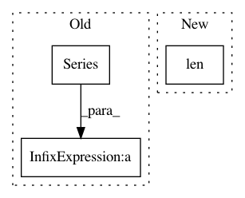

ad62220be4d5da1bdcbb4b9b7d0ac73760522b1b,trackpy/motion.py,,msd,#Any#Any#Any#Any#Any#Any#,9
Before Change
results["msd"] = mpp**2*(disp**2).mean(level=0).sum(1) // <r^2>
// Estimated statistically independent measurements = 2N/t
if detail:
results["N"] = 2*disp.iloc[:,0].count(level=0).div(Series(lagtimes))
results["lagt"] = results.index.values/fps
return results[:-1]
After Change
results[["<{}^2>".format(p) for p in pos_columns]] = mpp**2*(disp**2).mean(level=0)
results["msd"] = mpp**2*(disp**2).mean(level=0).sum(1) // <r^2>
if detail:
results["N"] = _msd_N(len(pos), lagtimes)
results["lagt"] = results.index.values/fps
return results[:-1]
In pattern: SUPERPATTERN
Frequency: 3
Non-data size: 3
Instances
Project Name: soft-matter/trackpy
Commit Name: ad62220be4d5da1bdcbb4b9b7d0ac73760522b1b
Time: 2015-12-15
Author: caspervdw@gmail.com
File Name: trackpy/motion.py
Class Name:
Method Name: msd
Project Name: gboeing/osmnx
Commit Name: dfe8d88a87a4b98f831f69012e22f8b7611f7d25
Time: 2020-05-13
Author: boeing@usc.edu
File Name: osmnx/simplify.py
Class Name:
Method Name: consolidate_intersections_rebuild_graph
Project Name: datascienceinc/Skater
Commit Name: 5601c4bb909b4146327fa68c6d5b668f997baaff
Time: 2017-03-21
Author: aikramer2@gmail.com
File Name: pyinterpret/data/dataset.py
Class Name: DataSet
Method Name: _build_metastore